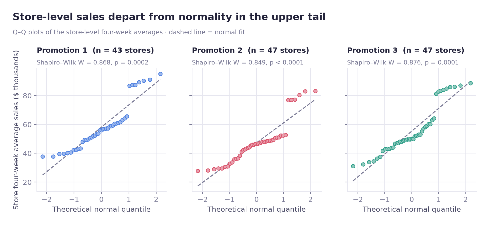
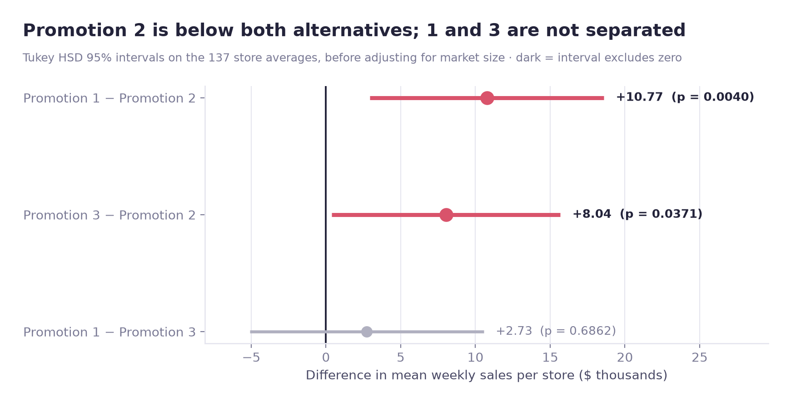
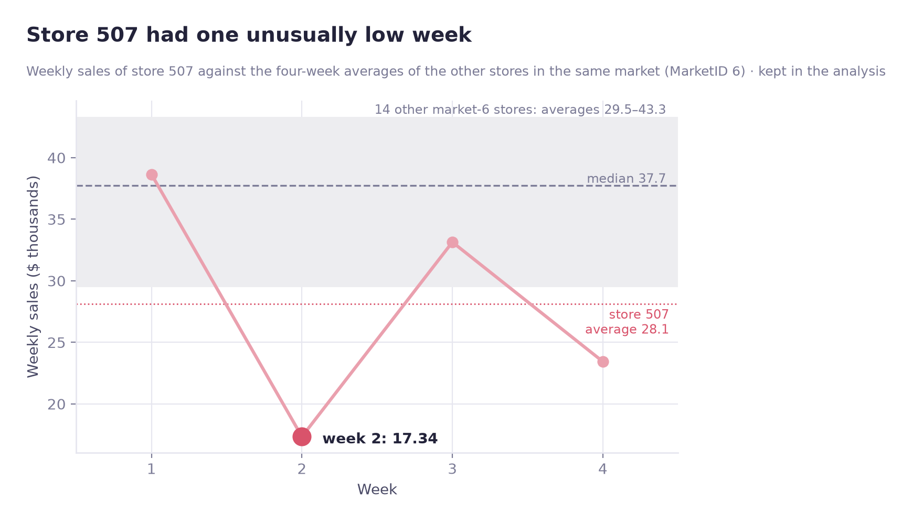
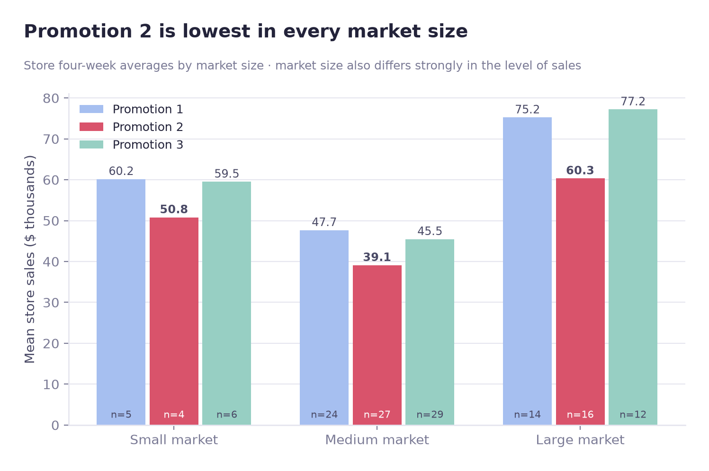
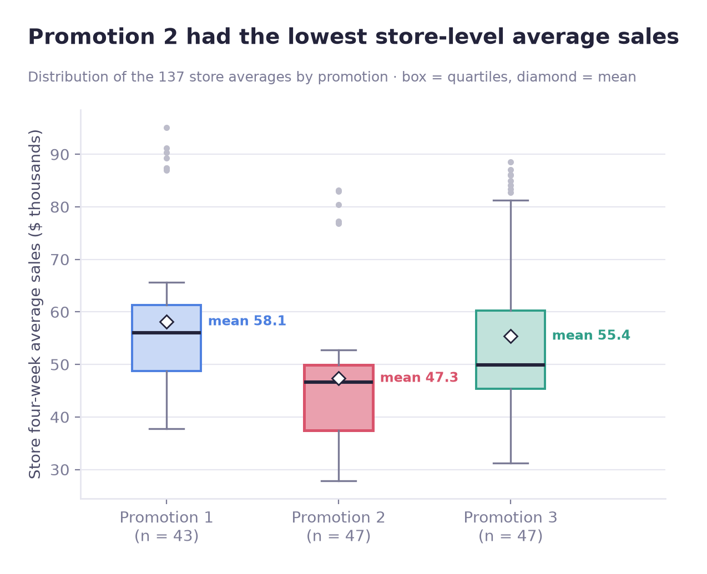

01
Overview
Context and scope of the comparison
A chain preparing to launch a new menu item had three candidate promotions and wanted to compare their sales performance.
Each of 137 stores was assigned a single promotion and its weekly sales were recorded for four weeks. The assignment procedure could not be verified from the data, and there was no no-promotion control group, so the comparison shows how the three promotions differ from each other, not how much any of them added over doing nothing.
This project evaluates whether the three strategies differed in sales performance, and turns the result into a recommendation for the business.
02
Business Question
Analytical objectives
Which of the three promotional strategies had the strongest sales performance?
- Did average sales differ meaningfully between the three promotions?
- Which promotion performed better or worse than the others, and by how much?
- Could differences in market characteristics explain the result instead?
- Are the findings robust to outliers and to repeated testing?
The last two questions test whether the observed ranking is robust. A ranking that disappears once market size is accounted for, or that holds in only one segment, would be a weak basis for a launch decision.
03
Data
Structure, variables, and source
Observations
548
Variables
7
Stores
137
Weeks per store
4
| Variable | Description |
|---|---|
| MarketID | Geographic market containing the stores |
| LocationID | Individual store identifier |
| MarketSize | Market size category — Small, Medium, Large |
| Promotion | Promotional strategy assigned to the store (1, 2, 3) |
| Week | Observation week |
| SalesInThousands | Weekly sales revenue, in thousands of dollars |
| AgeOfStore | Store age in years |
Promotion is stored numerically as 1, 2 and 3, but the values are labels rather than quantities. It was converted to a categorical type before any grouping or modelling, so no step could accidentally treat promotion 3 as “three times promotion 1”.
Source · IBM Watson Analytics, “Fast Food Marketing Campaign A/B Test”, distributed via Kaggle. The dataset was used for educational portfolio purposes. All analysis, statistical testing, interpretations, and recommendations were independently developed as part of this project.
04
Methodology
Analytical steps and the reasoning behind each
Most of the work in this project went into choosing appropriate comparisons and checks; running the tests themselves was the shorter part.
01
Validate the study design before testing
Before testing the promotion differences, I checked for duplicates, stores appearing under more than one promotion, missing weeks and assignment balance, so that later results would not simply reflect a data defect.
02
Match the analysis unit to the assignment unit
Promotions were assigned per store, but the file stores each location as four weekly rows. Treating those as independent would inflate the sample fourfold. Each store was therefore reduced to its four-week average, because the design provides 137 independent observations, not 548.
03
Check assumptions, then choose the test accordingly
Normality was rejected, while equal variance was not. Rather than rely on one method, ANOVA and a rank-based alternative were run together, so that the conclusion would be supported by both a parametric and a non-parametric test.
04
Follow the group test with a pairwise comparison
ANOVA can indicate that groups differ but not which ones. Tukey's HSD identified the specific pairs and reported each gap in dollars, which is easier to use in a business decision.
05
Report effect size alongside significance
Statistical significance and practical importance are different questions. Effect size was reported so that a statistically detectable but modest effect is not read as a large one.
06
Robustness and sensitivity checks
Three separate checks were run: balance on market size and store age together with an adjustment for market size, a re-run without the one questionable observation, and a correction for the false positives that repeated segment testing can produce. A result that holds across these checks is less likely to reflect confounding, a single observation or chance.
07
Translate the statistics into money and a decision
The Tukey revenue gap was applied to the 47 Promotion 2 stores over four weeks as a scenario estimate. A recommendation is easier to evaluate with a magnitude attached, but this figure only illustrates scale; it is not a measured loss.
05
Analysis
Data validation, unit of analysis, statistical assumptions and robustness checks
Data validation and assignment checks
The structural checks found no problems: no duplicate rows, no store split across promotions, no missing weeks, and every store observed for the full four weeks. The store-level allocation check (SRM) showed no mismatch (p = 0.8898) and market sizes were spread similarly across the three promotions (p = 0.8800), so the three groups can be compared with each other. This does not prove that assignment was random.
548 rows in, 548 rows out. Nothing was deleted, because the quality checks found nothing to remove. The outliers flagged by the IQR rule were not dropped at this stage; they are assessed separately in the outlier sensitivity check below, so that no rows were removed without a documented reason.
Unit of analysis: from 548 weekly rows to 137 store averages
Weekly observations from the same store, such as week 1 and week 2, are not independent; they resemble each other. Aggregating to store averages addresses this but discards the weekly detail, so I checked whether the aggregation was justified.
No week effect was detected
A reference test on the 548 weekly rows (which treats repeated weeks of one store as independent) found no common week effect (p = 0.9935), so averaging is unlikely to hide a common trend.
Variation is mainly between stores
Store-to-store spread was roughly 3.4× the week-to-week spread within a store.
A mixed model is a possible extension
A mixed-effects model would keep the weekly records and account for within-store dependence; it was not fitted here and is listed under future improvements.
Statistical assumptions and test selection

Normality not met
Shapiro–Wilk rejected normality in all three groups (p = 0.0002, <0.0001, 0.0001), with the departure in the upper tail.
Equal variance not rejected
Levene's test found no evidence of unequal variances (p = 0.6272), which keeps the parametric route viable.
ANOVA alone would be hard to justify given the non-normality, while a rank-based test alone would not allow the gap to be stated in dollars. With roughly balanced group sizes (43, 47, 47) and no detected difference in variances, both were run and required to agree, and they did.
Pairwise comparisons (Tukey HSD)

Robustness checks
Three checks tested whether Promotion 2's lower sales could be explained by market size, by a single unusual observation, or by repeated testing. None of them removed the difference.
Market size and store age as alternative explanations
Market size is far more strongly associated with sales than promotion (partial η² 0.593 vs 0.195 in the main-effects model), but no imbalance was detected across promotions in market size (p = 0.8800) or store age (p = 0.6387). Controlling for market size did not weaken the promotion difference: Promotion 1 − 2 stayed at +$10.77K with a narrower interval ([2.94, 18.60] → [5.73, 15.80]), and Promotion 3 − 2 rose from +$8.04K to +$9.75K ([0.39, 15.68] → [4.82, 14.69]). So observed market size does not account for the difference; unobserved store characteristics are not controlled.
Market-size-adjusted model
On the same 137 store averages, the promotion × market-size interaction was not significant (F = 1.32, p = 0.2659), so the main-effects model is interpreted; the Small market has only 15 stores, so that test has low power. After adjusting for market size, Promotion 2 is still lower than both alternatives: Promotion 1 − 2 is +$10.77K [5.73, 15.80] and Promotion 3 − 2 is +$9.75K [4.82, 14.69] (Tukey–Kramer 95% intervals; before adjustment +$10.77K [2.94, 18.60] and +$8.04K [0.39, 15.68]). Promotion 1 − 3 is still not separated (+$1.02K [−4.03, 6.06]); an interval that includes zero does not show the two are equal. Partial η² is 0.195 for promotion and 0.593 for market size. Adjusting for observed market size does not control unobserved store characteristics, so this is not a causal estimate.
Raw and market-size-adjusted means
| Promotion | Raw mean [95% CI] | Adjusted mean [95% CI] |
|---|---|---|
| 1 | 58.10 [53.17, 63.03] | 61.06 [57.79, 64.33] |
| 2 | 47.33 [43.07, 51.59] | 50.29 [47.08, 53.51] |
| 3 | 55.36 [50.55, 60.17] | 60.05 [56.88, 63.21] |
Mean weekly sales per store in thousands of dollars (n = 43, 47, 47 stores). Adjusted means weight the three market sizes equally.
Sensitivity to one unusual observation
Of the 46 weekly observations flagged by the IQR rule (within each promotion), 45 came from a single large market (MarketID 3), which is plausibly genuine sales in a large market rather than data errors. Deleting them would have removed genuine variation. One store (507) had a single unusually low week (17.34); with no direct evidence of a data-entry error it was kept, and the ANOVA was re-run without it as a check (F 5.85 → 5.78, p 0.0037 → 0.0039). The conclusion was unchanged.

Consistency across market segments and multiple-testing correction
Promotion 2 had the lowest mean in small, medium and large markets alike. Testing each segment separately means running three tests, which increases the chance of a false positive, so both Bonferroni and Benjamini-Hochberg corrections were applied. All three segments stayed significant afterwards. The one caveat: the small-market segment holds only about five stores per arm, so it carries less weight than the other two. A test of the promotion × market-size interaction was not significant (p = 0.2659), but with only 15 Small-market stores its power is low.

06
Results
Key findings
Promotion 2 had lower sales than both alternatives. Promotions 1 and 3 could not be separated on sales.

Promotion 2 had lower sales consistent
Lower sales than both alternatives, in every market size, after adjusting for market size, and essentially unchanged when the questionable observation is removed (p 0.0037 → 0.0039).
Promotions 1 and 3 were not separated unresolved
No detectable gap overall (+$2.73K, interval [−5.09, 10.56]); by market size the direction is not consistent: Promotion 1 is higher in Small (+0.65) and Medium (+2.20), while Promotion 3 is higher in Large (Promotion 1 − 3 = −1.97).
Effect size
Promotion is associated with roughly 8% of the variation in store sales (one-way η² = 0.0802), a medium effect by conventional standards. The remaining variation is likely related mostly to market size and other store characteristics.
The promotion differences are consistent across the checks above, but they are not the dominant source of variation in store sales, so expectations based on this result should be set accordingly.
07
Business Insights
Practical implications of the statistical result
Scenario estimate: applying the Tukey difference to the 47 stores that used Promotion 2 for four weeks gives a difference of roughly two million dollars relative to Promotion 1 (not a measured loss).
vs Promotion 1
$2,024,700
47 stores × 4 weeks, scenario estimate (not a measured loss)
about $10,770 per store-week
vs Promotion 3
$1,510,600
47 stores × 4 weeks, scenario estimate (not a measured loss)
about $8,035 per store-week
How to read these figures
The per-store, per-week gap is about $10,770 (Tukey difference before market-size adjustment). Applying it to 47 stores over four weeks gives the scenario figures above; The $2M figure is not an amount that any one restaurant lost.
It is also a point estimate, and it does not account for implementation costs, differing store responses, seasonality or profit margins; the outcome measured is revenue, so the cost of running each promotion is not included.
Recommendation
Pause or review Promotion 2
Promotion 2 had lower sales in every check that was run: a statistically significant gap against both alternatives, consistency across all market segments, a gap that is not explained by the observed market size or store age (it remained after adjusting for market size: adjusted Promotion 1 − 2 +$10.77K [5.73, 15.80], Promotion 3 − 2 +$9.75K [4.82, 14.69]), and stability when the questionable observation is removed.
Undecided Promotion 1 or Promotion 3
Sales data cannot separate them, so the choice has to be made on information this dataset does not contain: implementation and marketing cost, operational complexity, inventory and logistics burden, customer retention, and longer-term sales behaviour.
Because the sales data do not separate the two, the information listed above would need to be collected before the business commits to either one.
08
Limitations
What this analysis cannot answer
A four-week window
Long-term effects cannot be evaluated, and a durable effect cannot be told apart from initial novelty. Whether the ranking survives once the promotion stops being new is unknown.
Weekly detail was aggregated
Averaging to the store level ensured independent observations but removed any view of week-to-week dynamics.
No no-promotion group
The comparison is among the three promotions only, so it cannot show how much any promotion added over doing nothing.
Incomplete allocation documentation
A passing store-level allocation check (p = 0.8898) does not prove that assignment was random.
No cost or profit data
The dataset carries sales but not promotion, labour, marketing or operational cost. This evaluates revenue performance, not profitability.
A thin segment
The small-market group contributes only about five stores per arm. The result held after correction but deserves re-testing with more data.
Future improvements
- Mixed-effects models to use the weekly observations directly instead of averaging them
- A longer observation window to separate durable effects from novelty
- Cost and margin data, so the comparison can be made on profit rather than revenue
- Customer-level behaviour and retention metrics
- Interaction effects between promotion and market characteristics with more power (the current interaction test, p = 0.2659, has low power because the Small market has only 15 stores)
09
My Contribution
Scope of my work on the analysis
- Framed the business question and translated it into testable hypotheses
- Validated the dataset, including assignment consistency and allocation balance
- Decided the unit of analysis and justified the aggregation with evidence
- Evaluated the statistical assumptions and selected methods accordingly
- Ran the group comparison, a non-parametric robustness check, and pairwise post-hoc tests
- Investigated confounding variables and interaction effects
- Performed sensitivity and multiple-testing analyses to check the robustness of the finding
- Converted the statistical result into a scenario estimate of revenue impact
- Wrote the final recommendation, including what the data could not decide
10
Tools & Skills
What was used, and for what
Programming & data handling
Statistics & comparative testing
Analytical methods
Visualization
11
Repository
Notebook, code, and full write-up
The repository contains the complete Jupyter notebook with every test and figure reproducible from the raw dataset, along with the full README write-up.